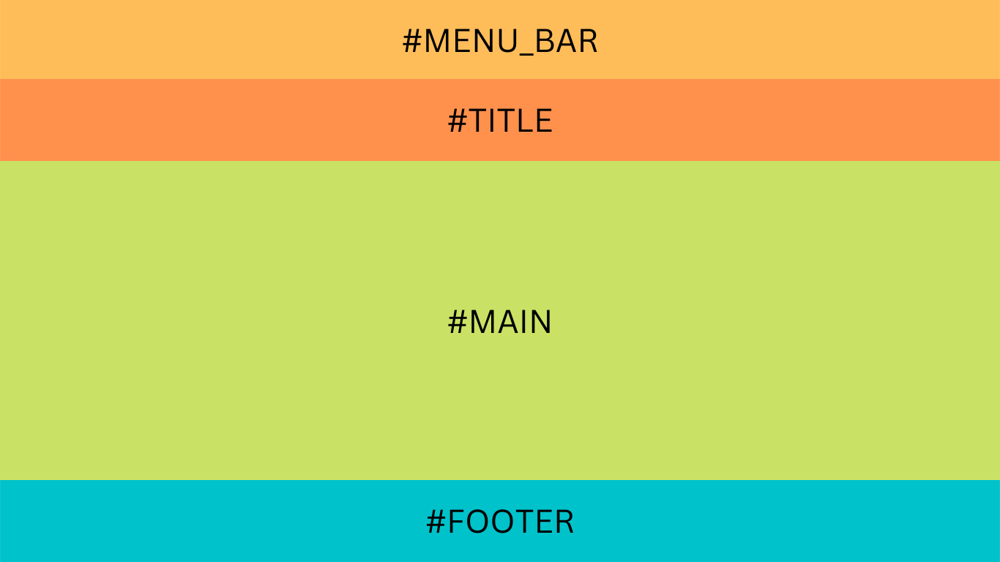

Personal Reflection
The web pages are designed based on my knowledge of learnings and experiences in html and css, which may have many aspects that are not as prefect as the other web pages. However, I believed that it is a prefect chance to learn and code, as it provided me experiences in creating a website which could be used and viewed.
Technical Aspects
Structure of the Website:
This website contains four webpages, one cascading stylesheet and few image files. Each HTML file has navigation links which are connected to the other three webpages. The home page, index.html is what the web server is configured to access when the websystems/ directory is specified. These webpages and the stylesheet are outlined in the table below.
| File / File Type | Title | Description / Technical Outline |
|---|---|---|
| index.html / HTML file | HOME | This is the home page of the website which contains a short summary about me. The HTML file contains four main elements which are separated by the div tag, this includes: a menu bar, header, main and footer. The image and the first paragraph are held in the same div tag, which allows them to be placed in a horizontal position to each other using the stylesheet. |
| past.html / HTML file | PAST | This is a webpage which contains information about my past experiences with computing. It contains a short summary of my experiences about computing using a 'p' tag, followed by a table which is used to categorise and communicate the past experiences, also an unordered list which is used to display the related information in each categories. |
| future.html / HTML file | FUTURE | This is a webpage which contains information about what I wish to do in the future. This webpage contains four main elements, which are separated by three div tags, includes: a menu bar, header, main and footer. The text is represented in three different paragraphs using the 'p' tags, which makes the webpage more readable. |
| comments.html / HTML file | COMMENTS | This is a webpage which contains information about comments adn explanations of the website. This webpage mainly uses serval paragraph elements and few h2 and h3 tags to separate the sections. Also, a table is used to describe and explain each files in this website. |
| websystems.css / CSS file | N/A | This is a stylesheet which controls the aesthetics of the website. This file contains all the styles for the website which controls the appearances of each element (e.g. the colors, positions and size) by linking the CSS id, CSS classes and elements to the html file. |
Structure of Webpages:
The HTML files create the framework and layout of the website, which is using the div (an HTML element); div is the content division element, which allows me to group similar sets of content together on the web page as it is the generic container for flow content in HTML.
There are four main div tags in each webpage of this website (might be more div tags in some HTML files which are under the main ones), which include: menu_bar, title, main and footer. They are all tagged using 'id' to specify a unique id for an HTML element. These elements are listed below:
1. menu_bar
The menu_bar div (colored in yellow in the image above) contains the navigation links to the individual webpages in this website, which allows everyone who opens this website can access the all the webpages. The links include all four webpages in this website, and three of them are displayed on the top of each webpage, except the one is showing on the page. For example, the HOME, PAST and FUTURE links are displayed on the top of the COMMENTS page. They created using the a tag, which is referring to the Hyperlinks in HTML elements. They are created using unordered list and linking to the CSS file with 'display: inline;' and 'padding: 200px;', so that they are displayed in a horizontal line with equal space between them.
2. title
The title div (colored in orange in the image above) contains the main title / header of the page. This is created using the h1 tag, which is customised by the .header class in the CSS file.
3. main
The main div (colored in green in the image above) contains the main contents of the page. This included few smaller titles in the page which are created using a mixture of heading tags (i.e. h2, h3), series of paragraph tags (i.e. p tags), unordered list (i.e. ul and li tag), tables containing rows and columns (i.e. table, th, td tags), and serval images (i.e. img tag).
All the tags are linked to the CSS file to control the appearances of each elements in the webpages, this is using the CSS classes and CSS elements (i.e. link to the whole tag in HTML instead of individual classes). Such as the image on the HOME page (aboutme.png), it is displayed horizontally with the text on its left, this is using 'display: flex;' in the CSS file which tags to the .date (i.e. the CSS class for a div which contains the paragraph and the image that needed to be placed in a horizontal line).
By applying the HTML tags correctly, it makes the website / pages to still representing the correct order, size and functions, even though the stylesheet is turned off; such as the image and paragraph just mentioned above, the 'width="450px"' is also included in the HTML tag for the image (img tag), it ensures that the size of the image would not be too big or too small when the HTML is not linked to the CSS file.
4. footer
The footer div (colored in blue in the image above) contains a navigation link of the page, which allows the users to go back to the top of the webpage, by utilising the 'a' tag (creating the 'top' as a link using the 'a' tag below the 'body' tag in the HTML file, then using another 'a' tag in the div container for the footer of the page to link to the top); also the footer contains information of the subject, assignment title, student name, id number and the institution (UTS), the text in the footer of the page is enclosed in the 'p' tags. All the text and links are included in the .footer class in the div container, and used for styles in the CSS file.
Aesthetics
The aesthetics of the website are designed to be clear and easy to read and navigate. The UI / UX design of a website is mainly about how simple and attractive in delivering the information created by the author. Therefore, this website is created in a minimalistic manner. The main elements in the aesthetics of the website are listed and explained below.
1. Layout / Structure
The layout of this website is vertical, which the users only need to scroll down if there is more contents, instead of scroll from left to right. All the elements (e.g. title, paragraph) are placed in a reading habit (from left to right), and spaces between each elements, so that the layout is cleaner, which also allows the contents to stand out better. This website are designed with simple HTML and CSS, the basic HTML tags (e.g. p , h1 tags) are used, which means that as the same HTML tags are used throughout the website, to achieve the same look. The CSS file is mainly used for improving the UI / UX design in this website, which provides the users a better user experience and can understand the contents of the website easily.
2. Font / Text Decoration
The fonts and font styles used in this website have been consistently, which allows the website looks more simple and clear. The font style used in the website is Times New Roman, and the font sizes are various throughout the website, such as the headings for each paragraph in the COMMENT page are using a larger size, whereas the text / paragraphs are using a large size. This allows the appearance of the webpage be more readable for the users, and easier to found the content they need as the headings stand out in the webpage. Furthermore, some of the text are underlined (e.g. sub-headings) which can distinguish from the contents that under each topic.
3. Color
The colors used throughout the website are mainly dark blue (background-color), white (navigation links), light-yellow(headings/title), as the color of the text is contradict to the background-color, it makes the contents stand out from the background-color, and easy to read. The colors are kept consistent throughout the website, as the rgb numbers were copied and pasted in the CSS file, so that all colors keep the same looks. Also, some different colors used in the text (e.g. the blue text in the Footer paragraph) in order to make the specific text to stands out from the rest, so that the users can refer back to which part of the image is mentioned in the content.
4. Interaction
The interactions in the website were created using CSS :hover selector. Such as the color of the navigation links changes when the mouse cursor move on the top of them (i.e. from white to yellow); the image of the webpage structure will be enlarged when the mouse cursor move on the top of it (i.e. transform: scale(1.5)), and a shadow effect is made using: box-shadow: 0 0 10px rgba(0, 0, 0, 0.5). Both interactions are used to provide feedbacks to the users when they are using the website, this could engage the users to read other webpages, and not get bored as they can feel their actions have been received, and image changing sizes instead of just plain text + image in the webpage.
Accessibility Aspects
This website is designed to be as appealing and accessible to the users as possible, the website has created in a user friendly way which focusing on the user experience. Serval aspects that make the website more readily are outlined below:
1. Images
The size of the images in the website is appropriated to view by the users, also the image on the COMMENT page (i.e. the web structure image) is able to be enlarged to allow the users read the texts in the image as clear as possible. Furthermore, the 'alt' attribute has been set on all images to provide users who has visual impairments a general idea of what the image is about without actually seeing the images.
2. Font
The font and its size is chose to optimise the users interface and their experience. As mentioned in the Aesthetics part, all sizes are chose to allow the headings to stand out from the rest of the text, so that the users can easily find what they are need in the website. Also, the letter-spacing and line-spacing are chose to be appropriated for the users to read. Some of the elements in the website, such as the navigation links have had their padding enlarged, since it will be easier to click on the right link.
3. Navigation Links
The navigation links are on the top of each webpage, which allows the users to jump to other webpages in the website. There is also a link at the footer section of each webpage, which allows the users to go back to the top of the page without manually scrolling up again; this saves time for the users if there is a lot of contents in the webpage.
4. Color
As mentioned in the Aesthetics part above, the background-color of the webpages and the text color are contrast to each other, which allows the contents in the webpages are easier to read.